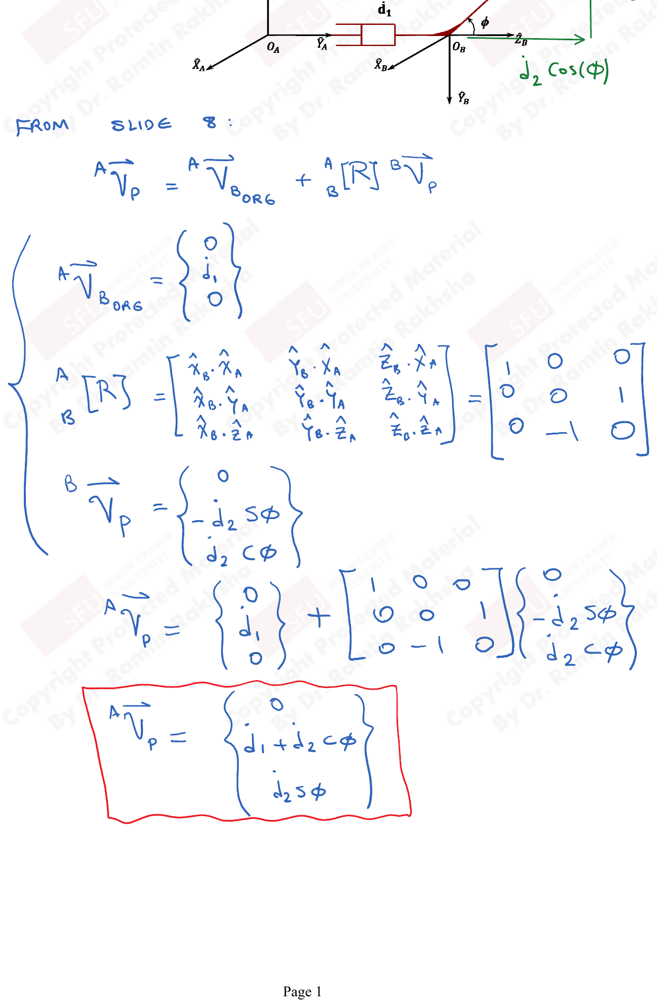
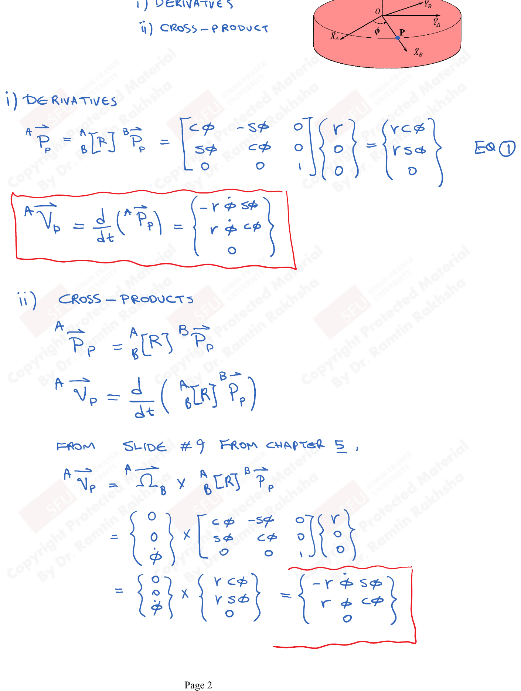
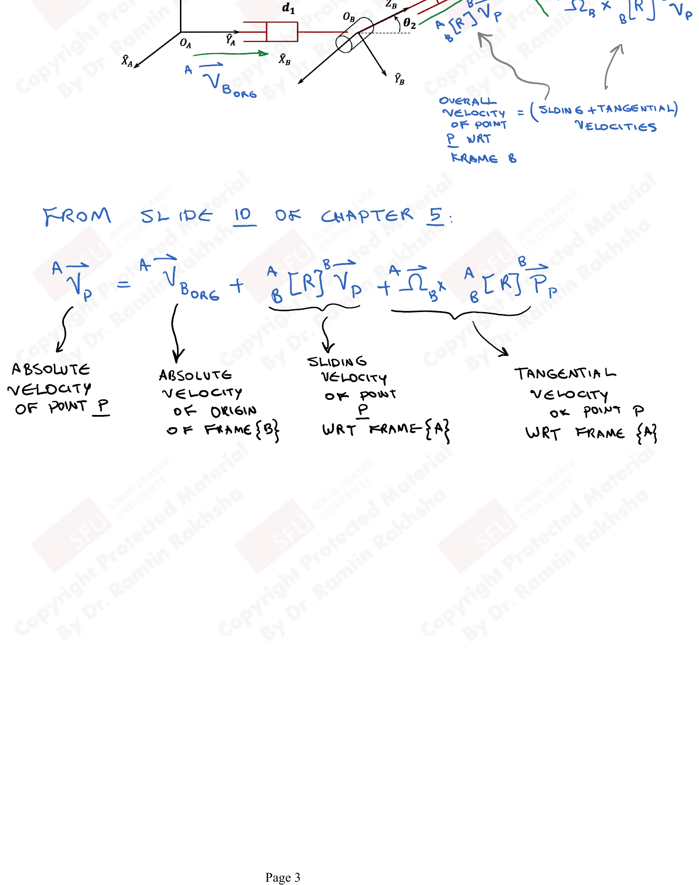
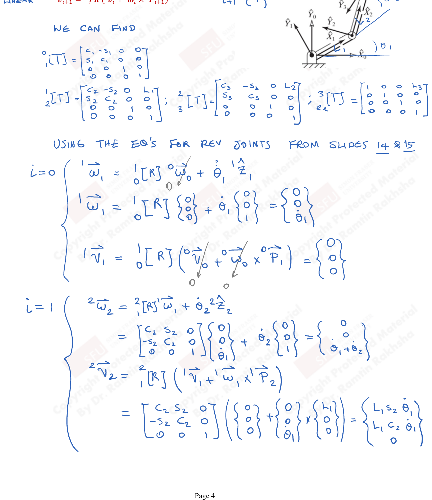

Tutorial 4: Velocity Propagation
Problem: Determine the absolute velocity of the end-effector (P).

From Slide 8:
$${}^{A}\vec{V}_P = {}^{A}\vec{V}_{B_{\text{ORG}}} + {}^{A}_{B}R \cdot {}^{B}\vec{V}_P$$The velocity of the origin of frame $\{B\}$ in frame $\{A\}$:
$${}^{A}\vec{V}_{B_{\text{ORG}}} = \begin{Bmatrix} 0 \\ \dot{d}_1 \\ 0 \end{Bmatrix}$$The rotation matrix from $\{B\}$ to $\{A\}$:
$${}^{A}_{B}R = \begin{bmatrix} \hat{X}_A \cdot \hat{X}_B & \hat{Y}_A \cdot \hat{X}_B & \hat{Z}_A \cdot \hat{X}_B \\ \hat{X}_A \cdot \hat{Y}_B & \hat{Y}_A \cdot \hat{Y}_B & \hat{Z}_A \cdot \hat{Y}_B \\ \hat{X}_A \cdot \hat{Z}_B & \hat{Y}_A \cdot \hat{Z}_B & \hat{Z}_A \cdot \hat{Z}_B \end{bmatrix} = \begin{bmatrix} 1 & 0 & 0 \\ 0 & 0 & 1 \\ 0 & -1 & 0 \end{bmatrix}$$The velocity of $P$ in frame $\{B\}$:
$${}^{B}\vec{V}_P = \begin{Bmatrix} 0 \\ -\dot{d}_2 \sin\phi \\ \dot{d}_2 \cos\phi \end{Bmatrix}$$Therefore:
$${}^{A}\vec{V}_P = \begin{Bmatrix} 0 \\ \dot{d}_1 \\ 0 \end{Bmatrix} + \begin{bmatrix} 1 & 0 & 0 \\ 0 & 0 & 1 \\ 0 & -1 & 0 \end{bmatrix} \begin{Bmatrix} 0 \\ -\dot{d}_2 \sin\phi \\ \dot{d}_2 \cos\phi \end{Bmatrix}$$ $$\boxed{{}^{A}\vec{V}_P = \begin{Bmatrix} 0 \\ \dot{d}_1 + \dot{d}_2 \cos\phi \\ \dot{d}_2 \sin\phi \end{Bmatrix}}$$Problem: Determine the absolute velocity of the end-effector (P). Let the radius of the disc be $r$.

This problem can be solved in two ways: (i) derivatives and (ii) cross-products.
Method (i): Derivatives
The position of $P$ in frame $\{A\}$:
$${}^{A}\vec{P}_P = {}^{A}_{B}R \cdot {}^{B}\vec{P}_P = \begin{bmatrix} C\phi & -S\phi & 0 \\ S\phi & C\phi & 0 \\ 0 & 0 & 1 \end{bmatrix} \begin{Bmatrix} r \\ 0 \\ 0 \end{Bmatrix} = \begin{Bmatrix} r\cos\phi \\ r\sin\phi \\ 0 \end{Bmatrix}$$Taking the time derivative:
$${}^{A}\vec{V}_P = \frac{d}{dt}\left({}^{A}\vec{P}_P\right) = \begin{Bmatrix} -r\dot{\phi}\sin\phi \\ r\dot{\phi}\cos\phi \\ 0 \end{Bmatrix}$$Method (ii): Cross-Products
From Slide #9 from Chapter 5:
$${}^{A}\vec{V}_P = {}^{A}\vec{\Omega}_B \times {}^{A}_{B}R \cdot {}^{B}\vec{P}_P$$ $$= \begin{Bmatrix} 0 \\ 0 \\ \dot{\phi} \end{Bmatrix} \times \begin{bmatrix} C\phi & -S\phi & 0 \\ S\phi & C\phi & 0 \\ 0 & 0 & 1 \end{bmatrix} \begin{Bmatrix} r \\ 0 \\ 0 \end{Bmatrix}$$ $$= \begin{Bmatrix} 0 \\ 0 \\ \dot{\phi} \end{Bmatrix} \times \begin{Bmatrix} r\cos\phi \\ r\sin\phi \\ 0 \end{Bmatrix} = \boxed{\begin{Bmatrix} -r\dot{\phi}\sin\phi \\ r\dot{\phi}\cos\phi \\ 0 \end{Bmatrix}}$$Both methods give the same result.
Problem: Determine the absolute velocity of the end-effector (P).

From Slide 10 of Chapter 5:
$${}^{A}\vec{V}_P = {}^{A}\vec{V}_{B_{\text{ORG}}} + {}^{A}_{B}R \cdot {}^{B}\vec{V}_P + {}^{A}\vec{\Omega}_B \times {}^{A}_{B}R \cdot {}^{B}\vec{P}_P$$Where:
- ${}^{A}\vec{V}_{B_{\text{ORG}}}$ = absolute velocity of origin of frame $\{B\}$
- ${}^{A}_{B}R \cdot {}^{B}\vec{V}_P$ = sliding velocity of point $P$ w.r.t. frame $\{A\}$
- ${}^{A}\vec{\Omega}_B \times {}^{A}_{B}R \cdot {}^{B}\vec{P}_P$ = tangential velocity of point $P$ w.r.t. frame $\{A\}$
The overall velocity of point $P$ w.r.t. frame $\{A\}$ equals the sliding plus tangential velocities.
Problem: Determine the velocity of the end-effector's tip of the three revolute-jointed planar manipulator shown.

Velocity propagation equations for revolute joints (slides 14 & 15):
$${}^{i+1}\vec{\omega}_{i+1} = {}^{i+1}_{i}R \cdot {}^{i}\vec{\omega}_i + \dot{\theta}_{i+1}\, {}^{i+1}\hat{Z}_{i+1}$$ $${}^{i+1}\vec{v}_{i+1} = {}^{i+1}_{i}R \left({}^{i}\vec{v}_i + {}^{i}\vec{\omega}_i \times {}^{i}\vec{P}_{i+1}\right)$$First, the individual link transforms:
$${}^{0}_{1}T = \begin{bmatrix} C_1 & -S_1 & 0 & 0 \\ S_1 & C_1 & 0 & 0 \\ 0 & 0 & 1 & 0 \\ 0 & 0 & 0 & 1 \end{bmatrix}, \quad {}^{1}_{2}T = \begin{bmatrix} C_2 & -S_2 & 0 & L_1 \\ S_2 & C_2 & 0 & 0 \\ 0 & 0 & 1 & 0 \\ 0 & 0 & 0 & 1 \end{bmatrix}, \quad {}^{2}_{3}T = \begin{bmatrix} C_3 & -S_3 & 0 & L_2 \\ S_3 & C_3 & 0 & 0 \\ 0 & 0 & 1 & 0 \\ 0 & 0 & 0 & 1 \end{bmatrix}$$Angular velocity:
$${}^{1}\vec{\omega}_1 = {}^{1}_{0}R \begin{Bmatrix} 0 \\ 0 \\ 0 \end{Bmatrix} + \dot{\theta}_1 \begin{Bmatrix} 0 \\ 0 \\ 1 \end{Bmatrix} = \begin{Bmatrix} 0 \\ 0 \\ \dot{\theta}_1 \end{Bmatrix}$$Linear velocity:
$${}^{1}\vec{v}_1 = {}^{1}_{0}R \left({}^{0}\vec{v}_0 + {}^{0}\vec{\omega}_0 \times {}^{0}\vec{P}_1\right) = \begin{Bmatrix} 0 \\ 0 \\ 0 \end{Bmatrix}$$Angular velocity:
$${}^{2}\vec{\omega}_2 = \begin{bmatrix} C_2 & S_2 & 0 \\ -S_2 & C_2 & 0 \\ 0 & 0 & 1 \end{bmatrix} \begin{Bmatrix} 0 \\ 0 \\ \dot{\theta}_1 \end{Bmatrix} + \dot{\theta}_2 \begin{Bmatrix} 0 \\ 0 \\ 1 \end{Bmatrix} = \begin{Bmatrix} 0 \\ 0 \\ \dot{\theta}_1 + \dot{\theta}_2 \end{Bmatrix}$$Linear velocity:
$${}^{2}\vec{v}_2 = \begin{bmatrix} C_2 & S_2 & 0 \\ -S_2 & C_2 & 0 \\ 0 & 0 & 1 \end{bmatrix} \left(\begin{Bmatrix} 0 \\ 0 \\ 0 \end{Bmatrix} + \begin{Bmatrix} 0 \\ 0 \\ \dot{\theta}_1 \end{Bmatrix} \times \begin{Bmatrix} L_1 \\ 0 \\ 0 \end{Bmatrix}\right)$$ $$= \begin{bmatrix} C_2 & S_2 & 0 \\ -S_2 & C_2 & 0 \\ 0 & 0 & 1 \end{bmatrix} \begin{Bmatrix} 0 \\ L_1 \dot{\theta}_1 \\ 0 \end{Bmatrix} = \begin{Bmatrix} L_1 S_2 \dot{\theta}_1 \\ L_1 C_2 \dot{\theta}_1 \\ 0 \end{Bmatrix}$$Angular velocity:
$${}^{3}\vec{\omega}_3 = \begin{bmatrix} C_3 & S_3 & 0 \\ -S_3 & C_3 & 0 \\ 0 & 0 & 1 \end{bmatrix} \begin{Bmatrix} 0 \\ 0 \\ \dot{\theta}_1 + \dot{\theta}_2 \end{Bmatrix} + \dot{\theta}_3 \begin{Bmatrix} 0 \\ 0 \\ 1 \end{Bmatrix} = \begin{Bmatrix} 0 \\ 0 \\ \dot{\theta}_1 + \dot{\theta}_2 + \dot{\theta}_3 \end{Bmatrix}$$Linear velocity:
$${}^{3}\vec{v}_3 = \begin{bmatrix} C_3 & S_3 & 0 \\ -S_3 & C_3 & 0 \\ 0 & 0 & 1 \end{bmatrix} \begin{Bmatrix} L_1 S_2 \dot{\theta}_1 \\ L_1 C_2 \dot{\theta}_1 + L_2(\dot{\theta}_1 + \dot{\theta}_2) \\ 0 \end{Bmatrix}$$ $$= \begin{Bmatrix} L_1 S_{23} \dot{\theta}_1 + L_2 S_3 (\dot{\theta}_1 + \dot{\theta}_2) \\ L_1 C_{23} \dot{\theta}_1 + L_2 C_3 (\dot{\theta}_1 + \dot{\theta}_2) \\ 0 \end{Bmatrix}$$where $S_{12} = \sin(\theta_1 + \theta_2)$, $C_{12} = \cos(\theta_1 + \theta_2)$, $S_{123} = \sin(\theta_1 + \theta_2 + \theta_3)$, $C_{123} = \cos(\theta_1 + \theta_2 + \theta_3)$.
Problem: For the arm with 3-DOF shown, there is a twist of 90 degrees in magnitude between axes 1 and axes 2. Let $L$ be the length of the end-effector.
- a) Derive link parameters and the kinematics for ${}^{0}_{3}T$.
- b) Solve for velocity propagation.
Part (a): DH Parameters and Forward Kinematics
| $i$ | $\alpha_{i-1}$ | $a_{i-1}$ | $d_i$ | $\theta_i$ |
|---|---|---|---|---|
| 1 | 0 | 0 | 0 | $\theta_1$ |
| 2 | $-90°$ | 0 | $d_2$ | $\theta_2$ |
| 3 | 0 | 0 | 0 | $\theta_3$ |
Individual transforms:
$${}^{0}_{1}T = \begin{bmatrix} C_1 & -S_1 & 0 & 0 \\ S_1 & C_1 & 0 & 0 \\ 0 & 0 & 1 & 0 \\ 0 & 0 & 0 & 1 \end{bmatrix}$$ $${}^{1}_{2}T = \begin{bmatrix} C_2 & -S_2 & 0 & 0 \\ 0 & 0 & 1 & d_2 \\ -S_2 & -C_2 & 0 & 0 \\ 0 & 0 & 0 & 1 \end{bmatrix}$$ $${}^{2}_{3}T = \begin{bmatrix} C_3 & -S_3 & 0 & 0 \\ S_3 & C_3 & 0 & 0 \\ 0 & 0 & 1 & 0 \\ 0 & 0 & 0 & 1 \end{bmatrix}$$Part (b): Velocity Propagation
If also ${}^{3}\vec{P}_{EE} = \begin{Bmatrix} L \\ 0 \\ 0 \end{Bmatrix}$, then in the base frame:
$${}^{0}\vec{v}_{EE} = \begin{Bmatrix} C_1 S_{23} \dot{\theta}_1 \\ -d_2 \dot{\theta}_1 - L S_3(\dot{\theta}_2 + \dot{\theta}_3) \\ -d_2 C_1 \dot{\theta}_1 + L C_3(\dot{\theta}_2 + \dot{\theta}_3) \end{Bmatrix}$$